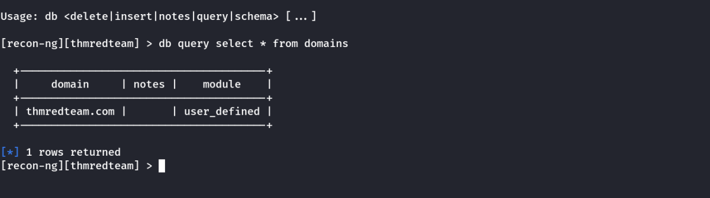
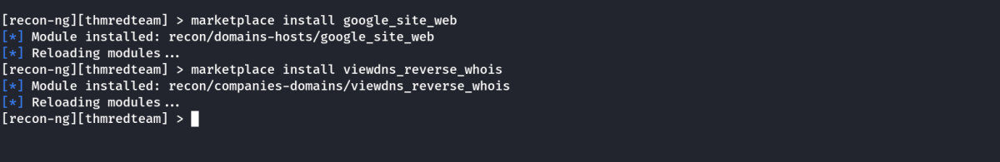

Recon-ng
Recon-ng
Recon-ng is a framework that helps automate the OSINT work. It uses modules from various authors and provides a multitude of functionality. Some modules require keys to work; the key allows the module to query the related online API. In this task, we will demonstrate using Recon-ng in the terminal.
Link: https://github.com/lanmaster53/recon-ng
From a penetration testing and red team point of view, Recon-ng can be used to find various bits and pieces of information that can aid in an operation or OSINT task. All the data collected is automatically saved in the database related to your workspace. For instance, you might discover host addresses to later port-scan or collect contact email addresses for phishing attacks.
You can start Recon-ng by running the command recon-ng. Starting Recon-ng will give you a prompt like [recon-ng][default] >. At this stage, you need to select the installed module you want to use. However, if this is the first time you're running recon-ng, you will need to install the module(s) you need.
In this task, we will follow the following workflow:
1. Create a workspace for your project
2. Insert the starting information into the database
3. Search the marketplace for a module and learn about it before installing
4. List the installed modules and load one
5. Run the loaded module
Creating a Workspace
Run workspaces create WORKSPACE_NAME to create a new workspace for your investigation. For example, workspaces create thmredteam will create a workspace named thmredteam.
recon-ng -w WORKSPACE_NAME starts recon-ng with the specific workspace.
We can use the following to interact with different workspaces.
Seeding the Database
In reconnaissance, you are starting with one piece of information and transforming it into new pieces of information. For instance, you might start your research with a company name and use that to discover the domain name(s), contacts and profiles. Then you would use the new information you obtained to transform it further and learn more about your target.
Let’s consider the case where we know the target's domain name, thmredteam.com, and we would like to feed it into the Recon-ng database related to the active workspace. If we want to check the names of the tables in our database, we can run db schema.
We want to insert the domain name thmredteam.com into the domains table. We can do this using the command db insert domains.

db query select * from domains

Recon-ng Marketplace
We have a domain name, so a logical next step would be to search for a module that transforms domains into other types of information. Assuming we are starting from a fresh installation of Recon-ng, we will search for suitable modules from the marketplace.
Before you install modules using the marketplace, these are some useful commands related to marketplace usage:
• marketplace search KEYWORD to search for available modules with keyword.
• marketplace info MODULE to provide information about the module in question.
• marketplace install MODULE to install the specified module into Recon-ng.
• marketplace remove MODULE to uninstall the specified module.
The modules are grouped under multiple categories, such as discovery, import, recon and reporting. Moreover, recon is also divided into many subcategories depending on the transform type. Run marketplace search to get a list of all available modules.
In the terminal below, we search for modules containing domains-.
We notice many subcategories under recon, such as domains-companies, domains-contacts, and domains-hosts. This naming tells us what kind of new information we will get from that transformation. For instance, domains-hosts means that the module will find hosts related to the provided domain.
Some modules, like whoxy_whois, require a key, as we can tell from the * under the K column. This requirement indicates that this module is not usable unless we have a key to use the related service.
Other modules have dependencies, indicated by a * under the D column. Dependencies show that third-party Python libraries might be necessary to use the related module.
Let’s say that you are interested in recon/domains-hosts/google_site_web. To learn more about any particular module, you can use the command marketplace info MODULE; this is an essential command that explains what the module does. For example, marketplace info google_site_web provides the following description: “Harvests hosts from Google.com by using the ‘site’ search operator. Updates the ‘hosts’ table with the results.” In other words, this module will use the Google search engine and the “site” operator.
We can install the module we want with the command marketplace install MODULE, for example, marketplace install google_site_web.
Installing

Working with Installed Modules
We can work with modules using:
modules search to get a list of all the installed modules
modules load MODULE to load a specific module to memory
Let’s load the module that we installed earlier from the marketplace, modules load viewdns_reverse_whois. To run it, we need to set the required options.
options list to list the options that we can set for the loaded module.
options set <option> <value> to set the value of the option.
In a previous step, we have installed the module google_site_web, so let’s load it using load google_site_web and run it with run. We have already added the domain thmredteam.com to the database, so when the module is run, it will read that value from the database, get new kinds of information, and add them to the database in turn. The commands and the results are shown in the terminal output below.
This module has queried Google and discovered two hosts, cafe.thmredteam.com and clinic.thmredteam.com. It is possible that by the time you run these steps, new hosts will also appear.
Keys
Some modules cannot be used without a key for the respective service API. K indicates that you need to provide the relevant service key to use the module in question.
• keys list lists the keys
• keys add KEY_NAME KEY_VALUE adds a key
• keys remove KEY_NAME removes a key
Once you have the set of modules installed, you can proceed to load and run them.
• modules load MODULE loads an installed module
• CTRL + C unloads the module.
• info to review the loaded module’s info.
• options list lists available options for the chosen module.
• options set NAME VALUE
• run to execute the loaded module.